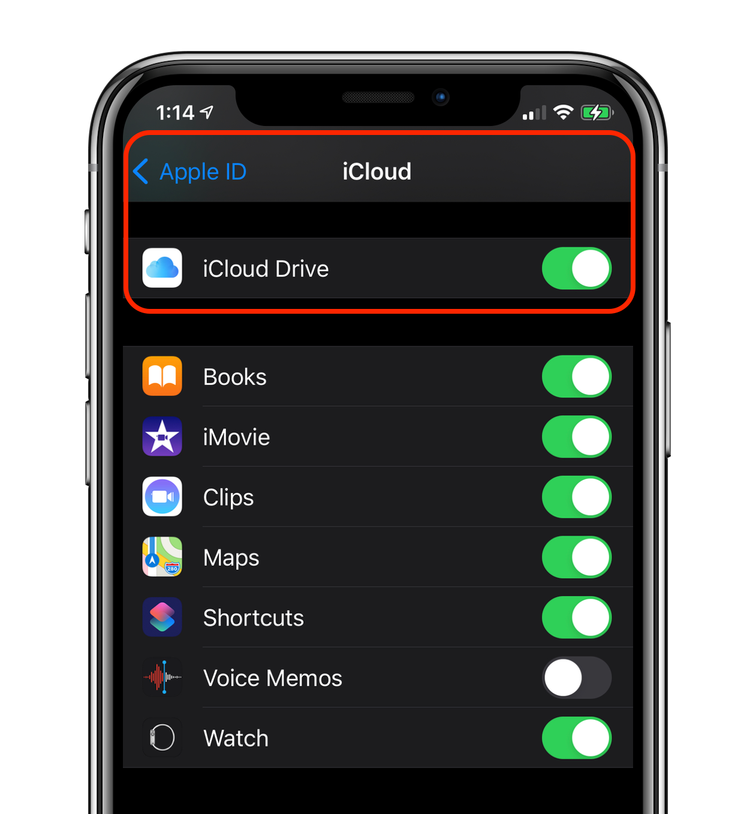

How do I enable iCloud?
TennisKeeper uses Apple iCloud to store all your data so that you can synchronize them between your devices. Please make sure you are logged into your iCloud account using your Apple ID, and the iCloud Drive option is enabled.
To enable iCloud:
- On your iPhone or iPad, go to Settings > iCloud, make sure you are already logged into your Apple iCloud account using your Apple ID.
- Then go to Settings > iCloud > iCloud Drive to make sure it is set to On.

- Make sure you allow iCloud Drive access when using cellular data. This is especially
important if you plan to track your activities using your Apple Watch
when you are playing on a court that has no wifi access.

Trouble Shooting
If you have enabled to iCloud, and you still see the iCloud Disabled alert, this is because
Apple iCloud is having connectivity issues. Simply wait for a minute, then resync your data again from iCloud.
You can do this by tapping Stats > Resync stats from iCloud. Wait for the spinning icon to stop.
Alternatively you can just restart the TennisKeeper app.